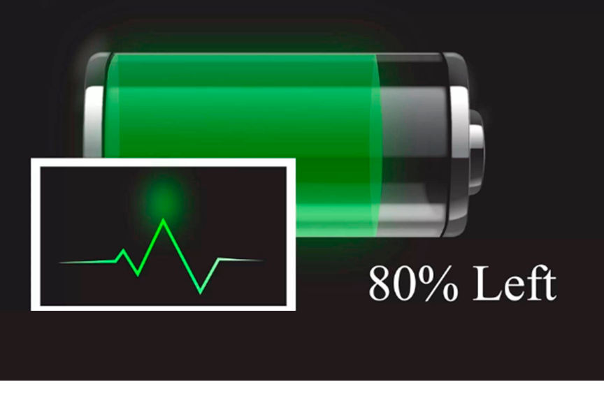
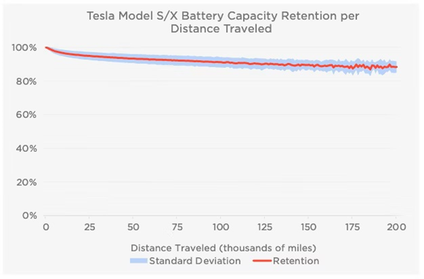
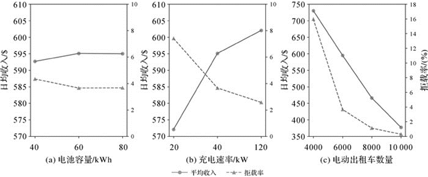

Любые аккумуляторные батареи со временем становятся менее эффективными. По мере химического старения литий-ионных батарей не только теряется мощность, но и увеличивается импеданс батареи, что приводит к снижению способности батареи выдавать максимальную мгновенную мощность, или "пиковую мощность". Импеданс батареи может временно увеличиваться в состоянии низкого заряда и при низких температурах. Добавив к этим факторам химический возраст, получим еще более значительное увеличение импеданса.
Для нормального функционирования электромобиля устройства должны иметь возможность мгновенно получать энергию от батареи, а батарея с высоким импедансом может оказаться не в состоянии обеспечить достаточную мощность для системы. Недостаток мощности связан с падением напряжения, иногда даже ниже минимального уровня, необходимого для нормальной работы электронных компонентов. В таком случае система выполнит отключение для сохранения электронных компонентов. Хотя это отключение является преднамеренным с точки зрения устройства, оно может быть неожиданным для пользователя. В этот момент мы можем сказать, что ваша батарея "мертва".
Рисунок 1. Химическое старение батареи приводит к тому, что максимальная емкость батареи после некоторого периода пользования уменьшается по сравнению с первоначальной емкостью
Конкретные цифры?
В ноябре 2019 года лизинговая компания Tesloop заявила, что она прошла 330 000 миль (531 083 км) на автомобиле Model X с первоначальным запасом хода 260 миль, при этом в процессе пользования производительность снизилась на 23% (260 миль до 200 миль), что соответствует примерно 1 400-1 500 циклам зарядки.
Влияние различных решений по терморегулированию на срок службы батареи также значительно: Батареи с жидкостным охлаждением деградируют медленнее, чем батареи с воздушным охлаждением. Geotab, ведущая компания по телематике и управлению автопарком, в 2015 году наблюдала среднегодовую скорость деградации 2,3% для батарей с жидкостным охлаждением, а также для плоских батарей Tesla Model S, по сравнению с 4,2% для Nissan LEAF с воздушным охлаждением. Задний блок модулей Nissan LEAF обычно расширяется из-за перегрева после 190 000 км пробега. Стоимость замены расширенного модуля составляла 900 фунтов стерлингов (1235 долларов США).
Рисунок 2. Батарея Tesla Model S и X деградирует со временем. Источник: Tesla
Экономическая эффективность
На экономическую эффективность батареи влияет не только химический возраст, но и емкость батареи, а также скорость зарядки. Согласно исследованию, проведенному учеными, для водителей, использующих электрические такси, три фактора определяют их ежедневный доход: (а) начальная емкость батареи автомобиля/кВтч, (б) скорость зарядки/кВт, (в) общее количество такси.
Рисунок 3. Ось с левой стороны каждого графика представляет средний доход водителя в день /$, ось с правой стороны каждого графика представляет процент отказа водителем от заказа клиента (водители такси могут отклонять запросы клиентов из-за фактора расстояния или времени)/%; сплошную линию следует читать по левой оси графика, пунктирную линию следует читать с правой оси графика. Источник: http://xb.sinomaps.com/article/2020/1001-1595/2020-12-1630.htm
Основываясь на данных о поездках на такси, собранных Комиссией по такси и лимузинам Нью-Йорка в мае 2016 года, и распределении местных зарядных постов, ученые использовали алгоритмы для моделирования крупномасштабного использования электрических такси, и пришли к выводу, что доход от электрических такси в значительной степени определяется емкостью батареи и скоростью зарядки. При оптимальной начальной емкости аккумулятора от 60 кВт/ч до 80 кВт/ч и скорости зарядки от 40 кВт до 120 кВт в час, электрические такси могут удовлетворить 96,5%-97,5% городского спроса на поездки.
Поэтому для городского таксиста, если он покупает EV с литиевой батареей емкостью менее 60 кВтч, химическое старение батареи оказывает более серьезное влияние на экономическую эффективность.
Предыдущие инженерные примеры показали, что плоские литиевые батареи и жидкостное охлаждение являются лучшим решением для обеспечения равномерной температуры, снижая емкость батареи всего на 10% после 321 868,8 км (200000 миль) пробега. Именно поэтому автопроизводители сейчас используют плоские литиевые батареи и жидкостное охлаждение (если они достаточно чувствительны к технологической революции).
На данный момент можно сказать, что с учетом срока службы батареи и других необходимых факторов мы рекомендуем выбирать электромобиль с аккумуляторной батареей, которая должна:
1) Иметь емкость аккумулятора от 60 кВт/ч до 80 кВт/ч, если вы используете авто в основном в городе или вблизи него;
2) Иметь плоский блок батарей: таким образом каждая батарея получает одинаковый уровень теплоотдачи, весь аккумуляторный блок прослужит дольше;
3) Иметь жидкостную систему охлаждения, воздушное охлаждение не является надежным решением.